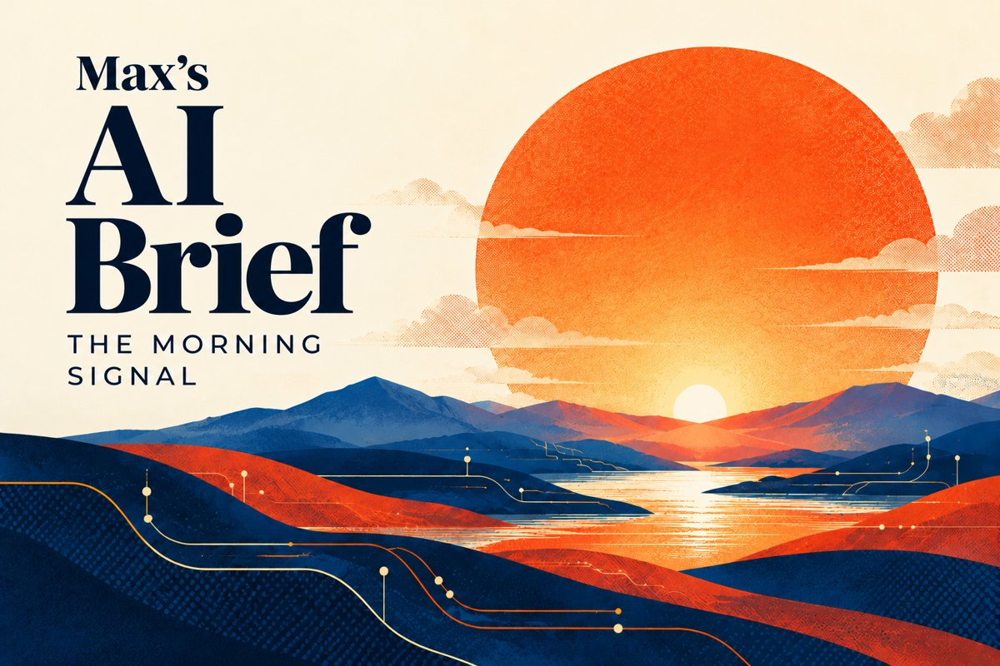

THE MODEL ARCHIVE
One day.
Many perspectives.
Explore the AI Brief across models.
Pick a day. Choose two models. See how they compare.

30 archived days516 model reportsNewest first · Original reports preserved
November 2026
24 daysFri27Nov 202623 reports ↗Thu26Nov 202622 reports ↗Wed25Nov 202623 reports ↗Tue24Nov 202623 reports ↗Mon23Nov 202623 reports ↗Sun22Nov 202623 reports ↗Sat21Nov 202623 reports ↗Fri20Nov 202623 reports ↗Thu19Nov 202623 reports ↗Wed18Nov 202622 reports ↗Tue17Nov 202620 reports ↗Mon16Nov 202620 reports ↗Sun15Nov 202619 reports ↗Sat14Nov 202619 reports ↗Fri13Nov 202619 reports ↗Thu12Nov 202618 reports ↗Wed11Nov 202618 reports ↗Tue10Nov 202617 reports ↗Mon9Nov 202616 reports ↗Sun8Nov 202616 reports ↗Sat7Nov 202612 reports ↗Tue3Nov 202612 reports ↗Mon2Nov 202612 reports ↗Sun1Nov 202612 reports ↗